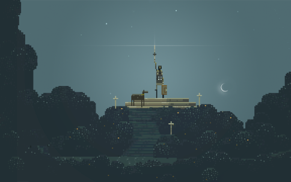
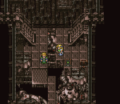
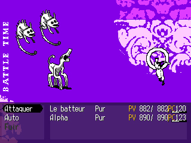
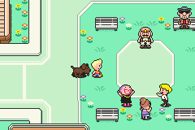
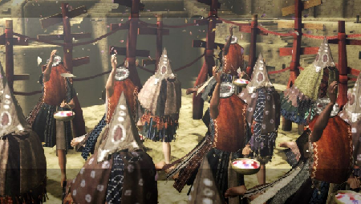
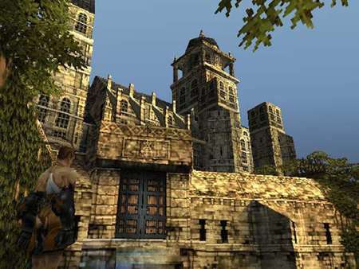
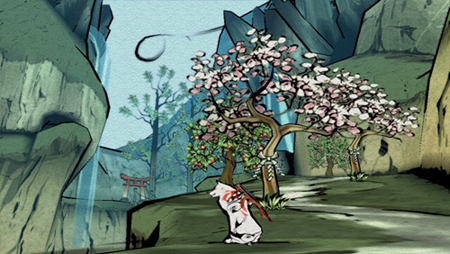
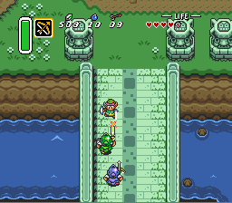

Le texte
Dans un certain nombre de critiques, d'articles, de posts et d'interviews que j'ai pu lire récemment, une même idée semble revenir de façon assez récurrente : le jeu vidéo doit redonner au gameplay une place dominante face à la narration et donc devenir moins « bavard ». Il y a une mouvance assez récente chez les joueurs et les game designers qui semble réticente à utiliser le texte. Le texte, d'une certaine façon, représenterait l'échec d'un gameplay noyé sous la narration (en particulier sous la forme des cinématiques-fleuves qu'on trouve dans les productions AAA).

L'article Less Talk More Rock, écrit par les concepteurs de Sword & Sworcery en est un exemple particulièrement intéressant (et dont je vous recommande chaudement la lecture, ne serait-ce que pour les illustrations qui l'accompagnent).
L'idée développée par l'auteur est que le texte n'est pas le mode d'expression « naturel » du jeu vidéo et qu'il n'est pas le moyen le plus fort pour communiquer une idée : une image vaut mieux qu'un long discours. Et en effet, des jeux comme Journey, Limbo ou Sword & Sworcery lui-même ont réussi à se passer du texte comme moyen de narration. Néanmoins, si l'on peut remettre en cause une génération de jeux noyée sous des dialogues bavards, il me semble que rejeter le texte comme élément de narration dans le jeu vidéo, c'est aller un peu loin.
Le jeu vidéo est un médium qui a été beaucoup plus influencé par le cinéma que par la littérature, et plus particulièrement ces dernières années, où l'industrie n'a eu de cesse d'essayer d'imiter les blockbusters de l'industrie cinématographique. C'est, je pense, cette vision cinématographique du jeu vidéo qui explique partiellement la position des auteurs de l'article : le cinéma est un art où il est essentiel de montrer plutôt que de dire quand on en a la possibilité. Mais l'image ne permet pas tout et il reste un certain nombre de possibilités offertes par le texte qui restent sous-exploitées par les développeurs de jeux : ce sont ces « espaces textuels » que cet article cherche à mieux cerner.
Fonctions classiques du texte.
Pour commencer, intéressons nous un peu aux diverses fonctions que le texte permet de remplir dans un jeu.
Communiquer.
L'un des premiers intérêts du texte dans un jeu vidéo, c'est de communiquer rapidement des informations au joueur.
Il peut s'agir d'une phase de didacticiel au début du jeu où vous présentez au joueur les commandes, les possibilités qui lui sont offertes ou les règles du jeu. Dans ce cas-là, on peut avoir un pavé de texte à disposition du joueur qui souhaite aller le lire ou bien un texte plus entrelacé avec les phases de jeu, avec par exemple de boîtes de dialogues qui viennent ponctuer un niveau introductif. Dans ce cas-là, le texte s'adresse directement au joueur.
D'une façon moins directe, le texte peut être une occasion de glisser des informations sur l'univers du jeu à travers les dialogues des PNJ. Il peut s'agir de simples éléments de background, mais aussi de pistes pour avancer dans la quête principale ou trouver des éléments de jeu annexes. En général, ce genre de dialogue prend place sous la forme d'allusions : le PNJ ne parle pas directement au joueur, mais parle au personnage pour faire comprendre certaines choses au joueur.

Pour une discussion plus avancée de la question des dialogues chez les PNJ, je vous renvoie à cet article : les auteurs se sont intéressés à de nombreux points de la conception de Final Fantasy VI et sont attachés en particulier à comprendre comment l'ensemble des dialogues du jeu est construit de façon à diriger le joueur sans le prendre pour un imbécile.
Caractériser les personnages.
Le texte, sous la forme du dialogue, est aussi l'occasion de présenter et de caractériser les personnages. C'est notamment un élément essentiel pour donner de la variété et de la profondeur aux différents protagonistes.
D'une part, le contenu du texte est l'occasion de présenter les personnages : le protagoniste parle de son histoire, de ses aspirations, de ses doutes, de ses peurs. D'autre part, la forme même du texte permet aussi de préciser ce personnage : sa façon de parler (hésitante, assurée, neutre), son registre de langage (soutenu, familier, ordurier), ses tics verbaux (répétitions, expressions, fautes) et beaucoup d'autres d'éléments permettent de révéler au joueur le caractère du personnage qui s'exprime.

Le jeu amateur Off sur RPGMaker (si vous n'y avez pas joué, foncez le télécharger) est un exemple particulièrement réussi de caractérisation des personnages à travers les dialogues. Rien qu'en lisant une réplique, on sait immédiatement qui est le personnage qui parle : le batteur est laconique, le juge déploie une prose particulièrement raffinée, Dedan est ordurier, Vadereloha est tragique… Ces dialogues sont une des forces du jeu, au point qu'une équipe de traducteurs amateurs américains a intégralement traduit le jeu en anglais.
Un exemple encore plus extrême est celui de Chrono Cross. Le jeu proposant au joueur de recruter 50 personnages, il était impossible de réécrire tous les dialogues en tenant compte de toutes les combinaisons possibles. Une bonne partie des dialogues est donc écrite de façon neutre, puis passée au travers d'un algorithme qui lui donne la caractérisation propre à un personnage : certains parlent entièrement en majuscules, d'autres ponctuent leurs dialogues de « Moi » et de « Toi » (en français dans le texte), d'autres encore rajoutent des accents divers sur leurs voyelles, etc.
Proposer des choix.
Le texte est aussi un moyen de présenter de façon simple des choix. Bien qu'il puisse y avoir d'autres façons de présenter un choix au joueur, le texte constitue le moyen le plus simple, le plus direct de le faire, en général sous la forme d'une liste d'alternatives.
C'est aussi ce qui fait parfois aussi sa difficulté d'utilisation : comment rester subtil dans la formulation des alternatives ? Un jeu comme Mass Effect (tout du moins le premier opus) pâtit lourdement de la forme de ses dialogues : les alternatives sont toujours divisées selon un axe conciliant/pragmatique, l'alternative conciliante en haut, l'alternative pragmatique en bas. Si ce système favorise la clarté, il nuit aussi à la subtilité, car la présentation des alternatives trahit toujours le manichéisme des choix.
Le texte, un outil pas forcément exploité.
À côté de ces fonctions classiques et plutôt bien cernées par les développeurs, d'autres possibilités pour jouer avec le texte dans le jeu existent et sont souvent mises de côté par les créateurs.
Des espaces textuels sous-utilisés.
L'ensemble des noms d'attaques, d'armes, d'équipements, d'objets forment un ensemble qui, s'il est utilisé de façon cohérente, participe à la profondeur de l'univers du jeu. Les descriptions de ces objets sont des espaces où le scénariste peut placer des informations d'une façon intéressante : le joueur qui n'en a pas envie n'est pas obligé de les lire, le joueur qui les lit se sent plus immergé, voire récompensé par des informations plus ou moins dissimulées. Dans Demon's Souls et son successeur Dark Souls, les descriptions des différents items disponibles dans l'inventaire recèlent un nombre surprenant de micro-histoires, voire d'indications sur la façon de récupérer certains pouvoirs.
Dans la série des Mother ou dans Radical Dreamers (la suite de Chrono Trigger et le « brouillon » de Chrono Cross), les combats sont racontés au moins partiellement sous la forme de phrases et non de visuels ou de chiffres. Ces phrases qui décrivent les combats sont l'occasion d'ajouter de la variété aux actions du joueur (ne serait-ce qu'en changeant la manière de raconter une simple attaque de base) voire d'élaborer des micro-histoires à l'intérieur même des combats.

Si Radical Dreamers proposent des joutes classiques où la scénarisation permet de faire la tension chez le joueur, les Mother jouent la carte de l'humour. Ainsi, au cours de certains combats contre de petits robots appelés Frightbots, ceux-ci se contentent de laisser leurs alliés attaquer à leur place et de raconter des histoires d'horreur (oui, vous avez bien lu) : les combats contre eux sont régulièrement émaillés de phrases comme « Le Frightbot raconte une histoire à vous glacer les sangs. » ou « Le Frightbot raconte une histoire d'horreur, mais néanmoins émouvante. ». Si sur le plan du gameplay, ces ennemis sont inutiles, ils apportent néanmoins beaucoup sur le plan de l'ambiance et de l'univers du jeu. Nombre de joueurs se souviendront par ailleurs de la fameuse phrase « You cannot grasp [SPOILER]'s attack true form ! ».
Ainsi, tous ces petits bouts de texte sont en général considérés comme inutiles ou simplement basiques, mais il y a matière à travailler dessus pour produire des effets intéressants, voire une profondeur de jeu supplémentaire.
Typographie et éclatement.
La forme même du texte peut faire l'objet d'un travail. Les scénaristes et les traducteurs vont ainsi parfois jusqu'à utiliser les subtilités de la typographie pour produire des effets uniques.
Dans Final Fantasy X, lors de la scène où Tidus est confronté à des réminiscences de son père à qui il en veut tout particulièrement, les auteurs ont joué à la fois sur l'éclatement spatial du texte (la voix de son père « résonne » partout sur l'écran de façon aléatoire) et sur le timing (les phrases apparaissent très brièvement, comme si elles étaient criées). C'est un moyen visuel très efficace pour rendre l'impression que Tidus est particulièrement oppressé par ces voix intérieures. Dans le huitième opus de la série, c'est la casse qui est mise à rude épreuve : lors du dialogue précédent le combat final contre Ultimecia, cette dernière alterne de façon chaotique majuscules et minuscules, créant ainsi une forte dissonance avec le décorum lisse et raffiné et donc une impression de malaise chez le joueur.
Dans Nier, une phase entière du jeu se déroule sous la forme de texte. Au début, la forme en est classique, mais, au fur et à mesure, les phrases et les mots s'éclatent de plus en plus jusqu'à ce que le texte devienne incompréhensible, ce qui traduit d'une autre façon l'effondrement que décrit le texte lui-même. Les personnages vont même jusqu'à commenter la bizarrerie de cette façon de jouer. Ce jeu sur la frontière entre joueur et personnage peut devenir très intéressante. On pourrait tout à fait imaginer un personnage qui commenterait lui-même le texte qui le prononce et la façon dont celui-ci s'écrit : « Oh regarde ! Quand le vieux sage dit « Cristal », ça s'affiche en rouge, ça doit être sacrément important ! » !
Dans l'exemple de Nier, l'effet obtenu est tout particulièrement caractéristique du texte et ne peut pas être reproduit par d'autres vecteurs.
Dissonances.
Le texte permet aussi de produire des effets de dissonance que le visuel ou le gameplay ne permettent pas de reproduire. Lorsque le texte est censé décrire ce qui se passe à l'écran, que se passe-t-il si celui-ci dévie et entre en contradiction avec ce qui est visible à l'écran ? Un effet de malaise, de dissonance.
Imaginons qu'à l'écran, un personnage doublé parle avec des sous-titres. Au début, le texte n'est que la transcription de ce que dit le personnage. Mais au bout d'un moment, le joueur réalise que certains mots cruciaux diffèrent entre le texte écrit et le texte dit. Il en résulterait une forte impression de malaise, le joueur penserait sans doute « Est-ce que j'ai vraiment bien lu/entendu ? ». On peut aussi imaginer un joueur entrant dans une pièce, au milieu de laquelle se trouve un objet quelconque, mettons un cube rouge. Imaginons maintenant que le texte qui décrit les actions du joueur affiche : « Vous entrez dans une pièce au milieu de laquelle trône un cube bleu. ». De la même façon, vous générez une impression de malaise.

Si ce genre d'effet, qui joue sur la limite entre diégétique et extradiégétique (le fameux « Fourth Wall »), n'a pas forcément sa place dans un certain nombre de jeux, il peut permettre des effets très intéressants pour des jeux d'horreur ou qui traitent de la thématique de la folie.
Nier en propose un exemple frappant dès son ouverture : après que le joueur a lancé une nouvelle partie, les mots « Eté 2049 » s'affichent à l'écran. Juste après qu'ils ont disparu, le jeu s'ouvre sur une ville couverte de neige. La première réaction qui vient à l'esprit, c'est quelque chose du genre « Quelque chose ne va pas. ». En cinq secondes, une impression très forte est faite sur le joueur et conditionne tout le ressenti qu'il aura face au prologue du jeu.
Dans une moindre mesure, Off joue aussi de cette dissonance pour réaffirmer la bizarrerie de son univers. Au fur et à mesure que le joueur avance dans sa quête, il découvre chacun des quatre éléments (que je vous laisse le soin de découvrir :p). À chaque fois, la même petite phrase vient conclure la description de l'élément : « C'est le premier des quatre éléments. ».
Références et méta-texte.
Sur plusieurs jeux d'une même série ou d'un même auteur, les noms et les descriptifs peuvent se répondre, de façon à créer une attente chez le joueur. Dans des séries longues comme les Final Fantasy, les Dragon Quest ou un peu différemment, les jeux Tri-Ace, le fait qu'un certain nombre de noms reviennent de façon récurrente (comme Shiva, Ifrit, Dharma, Zenithia, Gabriel Celesti, etc.) donne l'impression que ces noms font référence à quelque chose, à une mythologie. Cette utilisation du texte crée une forte impression de profondeur et de cohérence de l'univers, car elle est transversale. C'est un peu le même mécanisme qu'utilisaient les Final Fantasy au départ en faisant référence à la mythologie ancienne : à force d'être employés, ces mots sont devenus partie d'une mythologie interne à la série.

Cette utilisation de la répétition peut aussi être utilisée pour donner au joueur des informations cachées. Les jeux de Yasumi Matsuno, par exemple, n'ont pas de lien apparent mais se déroulent dans le même univers, Ivalice. Si les descriptions de chaque jeu sont efficaces et bien écrites, un certain nombre d'entre elles ne révèlent leur véritable sens qu'une fois que le joueur a fait plusieurs des jeux de la série. Par exemple, la description de certains objets de Vagrant Story éclaire le dénouement ambigu de Final Fantasy Tactics. C'est aussi un moyen de récompenser les joueurs qui s'y intéressent sans pénaliser les autres. C'est une façon particulièrement efficace de créer la sensation de « secret » qui a été encensé dans Dark Souls et dont beaucoup ont déploré l'absence dans les derniers Zelda.
La répétition de noms et de répliques à travers différents jeux permet de créer un « méta-texte » qui donne de la profondeur, de la densité à l'univers et aide à construire ce qu'on pourrait appeler une véritable mythologie.
Mise en forme.
Pour finir, j'aimerais revenir sur quelques aspects plus triviaux de l'écriture et sur la façon de la mettre en forme. Si certains points semblent évidents, un rappel ne me semble cependant pas inutile quand on voit les ratés qu'il y a pu avoir sur les jeux de certaines très grosses boîtes (oui oui, je pense à toi, Square Enix). Je mettrai cependant l'aspect graphique de côté pour cette discussion, celui-ci sera sans doute traité dans un prochain article :p
Orthographe et syntaxe
Il faut impérativement que l'orthographe, la syntaxe et la concordance des temps soient irréprochables. Ceci semblera évident à beaucoup de monde, mais nombre de projets amateurs ont une orthographe déplorable et certains projets de grands studios aussi ! Un des exemples qui m'a le plus marqué à titre personnel est la traduction française abominable d'Okami (qui est pourtant une merveille par ailleurs) : outre la vulgarité crasse de certains noms, les traducteurs ont semblé très attachés à ne pas conjuguer correctement les verbes. Même si le français n'est pas la langue la plus simple à maîtriser, dites vous que c'est un critère qui permet d'écarter rapidement des jeux bâclés pour les joueurs et les testeurs. Si nécessaire, faîtes vous relire, si possible par plusieurs personnes.

Rythme d'affichage.
C'est un problème qu'on retrouve souvent dans les RPG, tout particulièrement ceux qui ont été réalisés par des amateurs. S'il peut être intéressant de jouer sur le timing avec lequel le texte s'affiche (pour marquer des pauses par exemple), il est insupportable pour un joueur de ne pas pouvoir passer rapidement les dialogues, tout particulièrement s'il les a déjà lus. On se souviendra bien évidemment du fameux hibou d'Ocarina of Time qui, non content de parler très lentement et d'empêcher le joueur de passer à la suite, prend un malin plaisir à tout répéter (pour la petite histoire, c'est parce que les développeurs ont oublié de changer le rythme d'affichage, adéquat pour des caractères japonais, lors de la localisation en Occident :p).
Des jeux comme les Persona récents et les Ace Attorney ont très bien négocié ce problème : dans Persona, en maintenant une touche appuyé on peut faire défiler rapidement les dialogues, mais cette même touche ne permet pas de valider quand le jeu propose un choix, ce qui évite de cliquer par mégarde. Dans les Ace Attorney, il est possible de faire défiler les dialogues en accéléré la deuxième fois qu'on les lit, ce qui permet de retourner directement au passage qui vous intéresse.
Traduction.
Bien que ce problème ne se posera sans doute qu'à assez peu de créateurs amateurs, la traduction est un point qui est souvent négligé, même par les plus gros studios. Je mentionnais plus haut la localisation lamentable d'Okami, mais on pourrait tout aussi bien parler de la traduction de Final Fantasy VII, dont les dialogues sont truffés de fautes d'orthographe, de contresens, voire dépassent des boîtes de dialogue ou celle de Dissidia où l'anglais et le français se mélangent allègrement (oui oui, Square Enix, c'est encore à toi que je parle).
Une mauvaise traduction peut très facilement rompre l'immersion du joueur. Par ailleurs, pour des scénarios un peu élaborés, par exemple dans un RPG qui ferait intervenir un peu de politique, il est particulièrement important de faire attention à la façon dont les marques de politesse passent d'une langue à l'autre. Le passage du « you » anglais au « tu/vous » français est particulièrement maltraité en général. Saga Frontier II, malgré une excellente histoire, en est une triste victime : quand un soldat de seconde classe s'adresse à un roi, un général ou à un ministre, il ne le tutoie pas et même un traducteur amateur devrait le savoir.
A l'inverse, une traduction réussie peut apporter beaucoup. Pour s'en convaincre, il suffit de jouer aux opus récents de la saga Persona où les traducteurs ont fait attention de préserver les marques de politesse japonaises, ce qui leur permet non seulement d'avoir des dialogues fidèles à l'original, mais aussi de préserver l'ambiance anime très particulière de ces jeux.
Minimalité.
Dans l'ensemble, soyez paresseux et faîtes en toujours le minimum. Essayez de vous en tenir à l'essentiel pour ne pas lasser le joueur, mais aussi parce qu'écrire des dialogues, c'est beaucoup de boulot (et vous en aurez sans doute assez par ailleurs). En général, si une scène ou une ligne ne vous paraît pas absolument essentielle, si vous n'arrivez pas à exprimer la fonction qu'elle sert dans votre jeu, autant l'enlever.

J'ai été assez frappé en rejouant à certains opus de la série des Zelda récemment et notamment, j'ai été assez attristé de voir une dégradation dans l'utilisation des dialogues.
Prenons l'exemple de l'opus Super Nintendo, A Link to the Past : lorsque Link récupère un objet (mettons la baguette de glace), la description qui s'affiche à l'écran est d'une concision remarquable.
« Vous avez trouvé la Baguette de Glace ! » : on vous donne le nom de l'objet. « Utilisez là pour lancer des bourrasques glacées et geler vos ennemis. » : on vous explique à quoi elle sert. « Attention à votre compteur de Magie ! » : on vous donne la règle d'utilisation.
En trois lignes de texte (qu'il est de plus possible de passer rapidement si on en a envie), le jeu introduit l'objet de façon complète et efficace. C'est une utilisation minimale (et admirable) du texte dans un jeu.
Regardons maintenant du côté de son successeur, Ocarina of Time : lorsque Link récupère un objet quelconque, non seulement le joueur doit se farcir une description longue, qu'il ne peut pas passer, mais surtout, le jeu lui rappelle comment équiper ledit objet avec les boutons C. Pourtant, c'est la même règle pour tous les objets et le joueur l'a déjà vu quinze fois en une heure de jeu, sans compter les Kokiris qui le lui rappellent au début de l'aventure. Rapidement, le joueur se retrouve à relire régulièrement un laïus qu'il connaît déjà par cœur, qui ne lui apporte aucune information nouvelle et qui parasite son rythme de jeu (pour rappel, chaque fois que vous ramassez un objet dans un flacon, soit assez souvent, vous devez vous retaper ce même laïus !).
Entre les deux jeux, il y a un véritable fossé en matière d'utilisation du texte (et qui malheureusement, va dans le mauvais sens). Il me semble qu'en tous les cas, il vaut toujours mieux essayer de « dégraisser » le texte autant que possible. Et surtout, ne prenez pas les joueurs pour des abrutis !
Conclusion
Malgré une mouvance dans le jeu vidéo qui cherche à s'affranchir du texte, celui-ci reste un outil très puissant et souvent mal exploité. Même s'il n'est pas évident d'écrire des dialogues subtils, il est toujours possible d'assurer une qualité minimum en réfléchissant bien aux fonctions qu'on prête au texte et en demandant l'aide d'autres personnes pour des relectures (il peut s'agir de personnes n'ayant pas un intérêt particulier pour le jeu vidéo, un avis extérieur est toujours le bienvenu !). Assurer une orthographe, une syntaxe et un respect minimal des registres de langue est à la portée de tout le monde et en particulier des indépendants et des amateurs. Si c'est un sujet sur lequel même l'industrie pêche, c'est aussi l'occasion de montrer que sur certains points, le jeu indépendant peut faire aussi bien voire mieux que le jeu pro ! :P
Ajouter un commentaire
Commentaires

Quand j'ai essayé Sword and Sworcery, j'ai joué 10 minutes, puis décontenancé par le manque de texte et la confusion ambiante qui en découlait, j'ai arrêté. Décidément, on n'arrêtera jamais le "concept" :P

Merci pour cet excellent article !
Par contre en terme de police, de couleur, de taille, vous auriez des conseils ? Celles à éviter ? Celles agréables à l'oeil pour le joueur ? J'ai toujours du mal là dessus. Si un texte est indispensable / bien écrit / etc mais avec un visuel qui fait saigner les yeux, je doute que le joueur soit conquis :)
Des conseils ou bonnes pratiques là dessus ?
Très bon article, comme d'habitude. Je suis un peu déçu de ne pas avoir lu de parenthèse sur les jeux où le texte a constitué le seul élément visuel et de gameplay : Colossal Cave Adventure par exemple. De même je pense que l'exemple de Alan Wake aurait aussi constitué un très bon support pour ce thème.

Pour Okami, pas d'erreur (j'en avais déjà discuté avec plusieurs personnes).
Les traductions ne sont pas homogènes (par exemple, lors des rencontres avec les esprits, on a droit alternativement « Amaterasu, notre mère à tous », ce qui est correct, et « Amaterasu, mère à nous tous », ce qui est ridicule), il y a des faux-sens régulièrement (Cave de la Lune pour traduire Cave of the Moon alors qu'il s'agit d'une grotte ou d'une caverne), il y a des fautes d'orthographe et de conjugaison (par exemple, le futur se retrouve régulièrement affublé du « s » du conditionnel).
Très concrètement, si vous regardez l'introduction du jeu, on a droit à un magnifique « il vaincu » au lieu de « il vainquit » après environ 10 lignes de dialogues (pour info, j'ai joué à la version PS2, je ne sais pas ce qu'il en est de la version Wii).
Par ailleurs, précisons que cela ne change rien au fait que ce jeu est fabuleux :p
Je suis étonné par la description que vous faites de la traduction française d'Okami, êtes-vous certain de ne pas confondre avec la traduction anglaise qui elle modifie effectivement les noms propres (les occidentaux sont surement trop bêtes pour se souvenir de noms japonais de plus de deux syllabes) ? Les seules étrangetés dont j'ai le souvenir sont des références un peu décalées comme la chanson de la coupe du monde entonnée par Isshun… J'ai joué à la version PS2 mais je serais assez étonné que les autres versions n'utilisent pas la même traduction, m'éclaireriez-vous ? @_@
J'ai toujours eu l'impression, en jouant à A Link to the Past, que les descriptions étaient faites par une entité hors du jeu mais intérieur à la fois, entre le niveau du joueur et celui de Link. Du coup par rapport à Ocarina of Time (dont je n'ai que la description) ça ne casse pas l'immersion, c'est le narrateur de Pokémon qui me parle et pas le guide de jeu (ou alors pour ALTTP c'est inscrit sur / à coté de l'objet, ce qui est aussi bien). La description simple et rapide est aussi plus sympathique que le teste d'Ocarina of Time (tout ALTTP me laisse cette impression d'entité bienveillante au dessus tout du long).
Pour les fenêtres de dialogues, je peux aussi conseiller l'excellent cave story qui en fait une très bonne utilisation. Très bon article, juste un petit accent en trop sur "dîtes vous que c'est un critère qui permet d'écarter rapidement des jeux bâclés pour les joueurs et les testeurs" qui contredit un peu le reste du texte :p